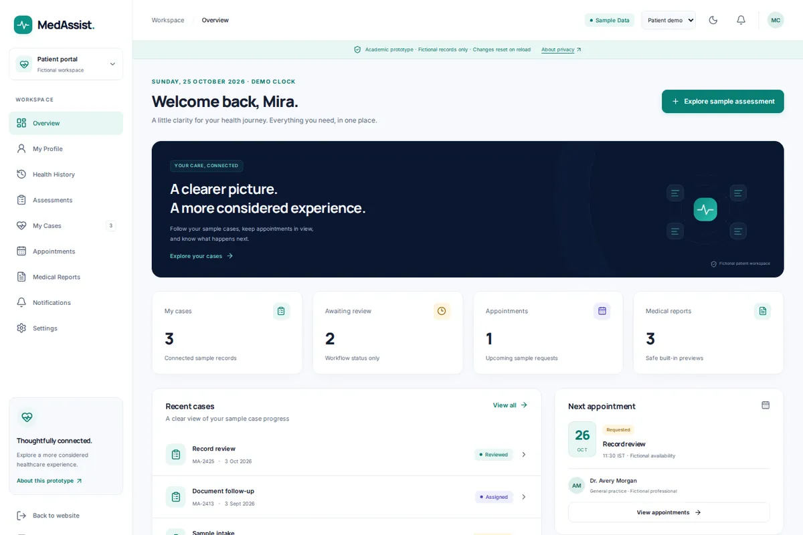

MedAssist
Healthcare information is scattered and hard for patients to follow. MedAssist is my academic prototype for bringing patient cases, structured assessments, appointments, and professional review into one place, built as separate patient, doctor, and administrator workspaces on fictional data.
- React and TypeScript frontend with role-based workspaces, searchable tables, and light and dark themes
- FastAPI service with typed responses, health checks, request IDs, and generated API docs
- Unit, browser, and API contract tests that run in GitHub Actions
Scope & direction
I design, build, and test every part of it. Working now: the demo workspaces, which keep fictional records in memory, and the API foundation. Planned next: affordable consultation discovery and medication-risk awareness, such as flagging possible interactions, allergy conflicts, and duplicate ingredients. These checks are not built yet. MedAssist is not a diagnosis or prescription tool and does not give medical advice.